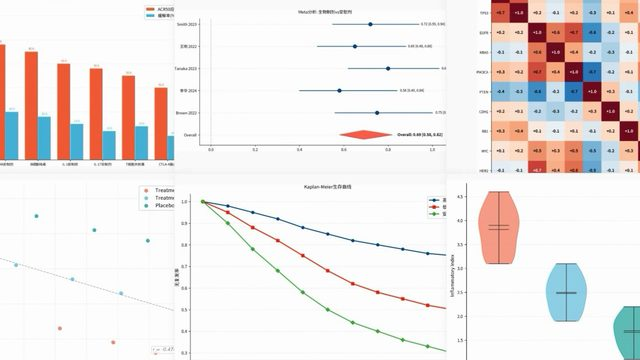
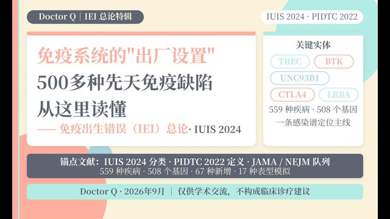
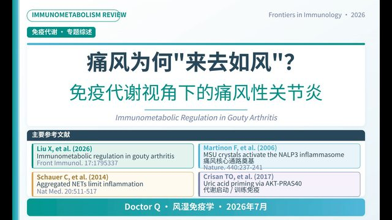

疾病专题 · 药物手册 · 临床工具 · 循证病例 —— 面向儿童风湿免疫临床的离线可用知识库，全部关键引用经 PubMed 逐条验证。

Academic Figures 实操演示：一条命令从数据生成顶刊级图表，22种类型、出版级质感，科研出图效率翻倍。

IEI病种深读系列总论：从基因缺陷到临床表型的框架性重新认知，适合免疫与儿科医生入门及进阶。

免疫代谢视角深读痛风性关节炎：从NLRP3炎症小体到治疗决策，含9节章节时间轴，适合风湿免疫临床与科研。